Всичко за покупката на едно място: конфигурацията с цени, числата за колата, какво струва на година, как се прави ток до гаража и списъкът за шоурума.
discipline pony-doc + caveman + html-doc + diagram-draw + bulgarian-writing + publish-vk (dispatched this session) · research ценовата листа на Škoda BG от 12.08.2026 (PDF), auto-data.net, carsized, ЗМДТ чл. 55 и 58, Eldrive, EVN PowerCheck, MyŠkoda, прегледи на Kodiaq iV (Fleet News, Top Gear, What Car?); снимки от пресцентъра на Škoda
Selection204 к.с.25,7 kWh51 943 €
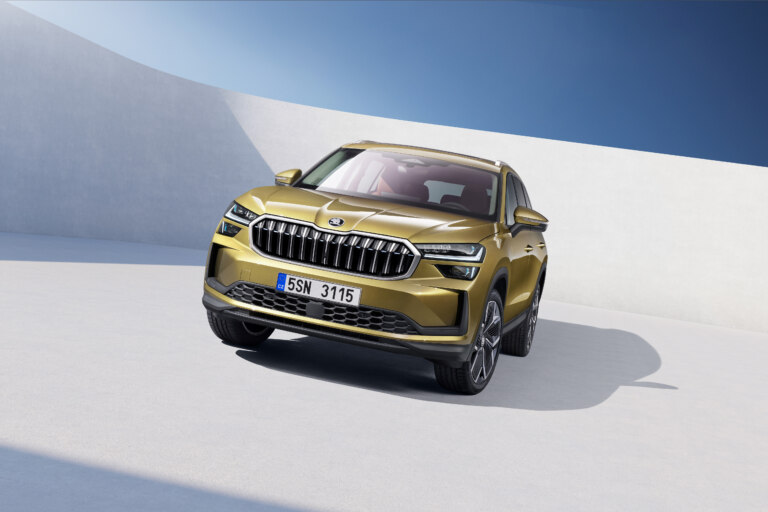
Kodiaq второ поколение. Снимките в документа са от пресцентъра на Škoda.
Купи го. Условието е едно: зарядна в гаража.
Плъг-ин, който се включва всяка вечер, е най-евтината кола за каране в Пловдив. Плъг-ин, който не се включва, е по-тежък и по-жаден от обикновен бензинов. Гаражът решава, и ти го правиш.
Единственото, което бих добавил: Интериор Lounge, 1 693 € — обърната изкуствена кожа SUEDIA вместо плат. С него: 53 636 €. Или Suite за 1 842 € — гладка изкуствена кожа, черна или коняк.
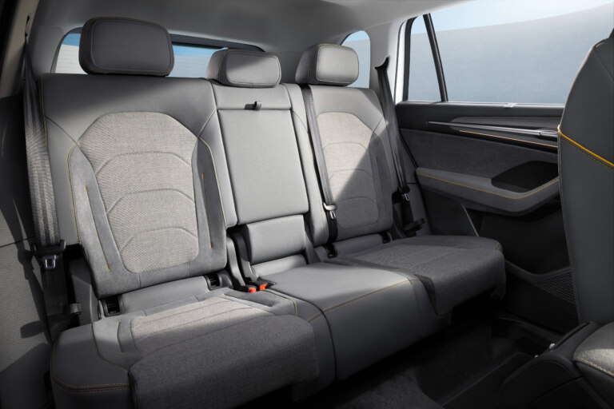
Стандартът: плат Selection Loft. Сива тъкан, издръжлива, без доплащане.
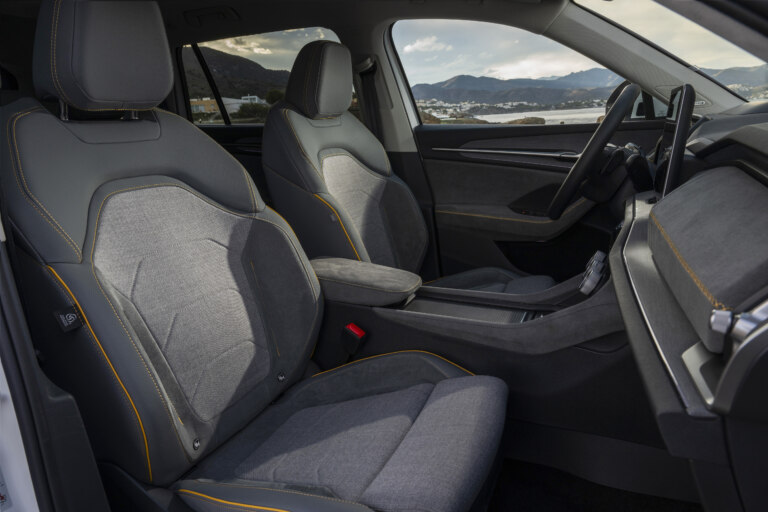
Lounge, 1 693 €: обърната изкуствена кожа SUEDIA с жълти шевове. По-мека на пипане.
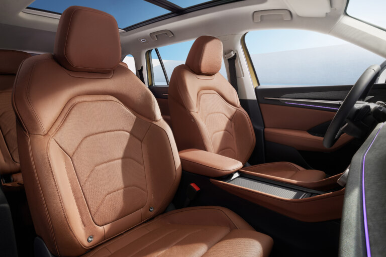
Suite Cognac, 1 842 €: гладка изкуствена кожа в коняк. Най-лесна за чистене.
Selection — какво е и какво идва стандартно
Базовото от трите нива — Selection, Sport Line, RS. Най-меко окачване, най-малки джанти, най-ниска цена. Не е голо: ето какво влиза без доплащане.
Безопасност
Airbag-и: водач, пътник, странични, завеси, централен между предните
Front Assist — спира сам пред препятствие или пешеходец
Адаптивен темпомат с ограничител
Lane Assist с активно водене + Emergency Assist
Traffic Jam Assist — следва колата отпред в задръстване
Side Assist за мъртва зона, Rear Traffic Alert
Turn Assist, Crossroad Assist
Пътни знаци, умора, налягане в гумите, E-Call
ISOFIX отзад
Комфорт
Тризонов климатроник
Подгряване на предните седалки
Комфортни седалки с лумбална опора
Безключово палене KESSY Go
Електрическа ръчна спирачка
Огледала с подгряване и сгъване
Сензор за дъжд, автоматични светлини
Паркинг сензори отпред и отзад, камера отзад
Затъмнени задни стъкла, щори
Амбиентно осветление
Задни седалки: плъзгат се 180 мм, делят се 40:20:40, сгъват се от багажника
Мултимедия
10,25-инчово дигитално табло
10,4-инчов екран, безжичен Apple CarPlay и Android Auto
Smart Dials — три физически копчета
Гласов контрол, 8 говорителя, DAB
Двойна кутия за телефони с безжично зареждане и вентилация
4 USB-C по 45 W плюс едно в огледалото
Care Connect — 3 години онлайн, приложение на телефона
Отвън и Simply Clever
LED фарове, дневни и задни
17-инчови джанти, гуми 215/65
Рейки на покрива, задна чистачка
Чадър във вратата
Стъргалка за лед в капачката
Държач за таблет отзад, за билет на стъклото
Щора, куки, отделения в багажника, постелки
Скоростите — с лостче на волана, без лост между седалките
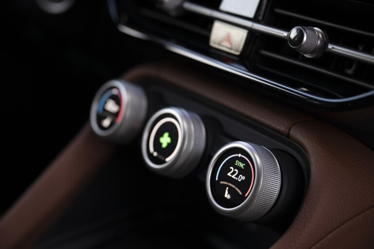
Smart Dials: три физически копчета. Температура, вентилатор, сила на звука, без да ровиш в екрана.
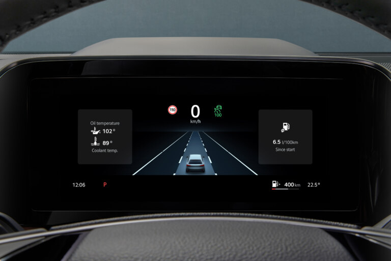
Дигиталното табло. Тук виждаш адаптивния темпомат и воденето в лентата, докато работят.
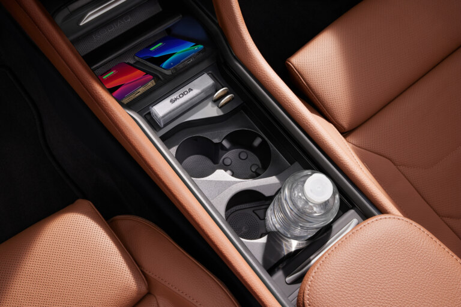
Кутията за два телефона с безжично зареждане и вентилация, за да не прегряват.
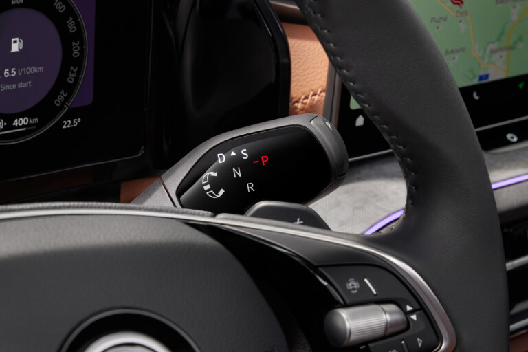
Скоростите се сменят с лостче на волана. Между седалките остава място за вещи.
Какво не получаваш
Тапицерията е плат (Selection Loft). Виж Lounge по-горе.
7 места и резервна гума — при плъг-ина не се предлагат изобщо. Има комплект за залепване.
4x4 — само предно.
Аудио CANTON с 14 говорителя — само в Convenience Plus (2 312 € вместо 1 108).
Вентилирани седалки с масаж, електрическа седалка за пътника — само в Convenience Plus&Clima (3 219 €).
Панорамен покрив — 1 262 €, не го препоръчвам.
Числата за колата
Мощност
204 к.с. общо: бензинов 1,5 TSI със 150 к.с. плюс електромотор със 116 к.с. и 330 Nm
0–100 км/ч
8,4 секунди. Дизелът 150 к.с. прави 9,8.
Максимална скорост
210 км/ч
Батерия
25,7 kWh общо, 19,7 kWh използваеми
Пробег на ток
100 км по стандарт. Реално около 95 лете, 60–75 зиме — студът и парното вземат 20–40%.
Зареждане
11 kW от станция вкъщи — 2,5 часа. 50 kW бързо по пътя — 10 до 80% за 26 минути.
Резервоар
45 литра. На бензин без ток гори около 7 л/100 км — около 600 км с пълен резервоар.
Тегло
1 838–2 009 кг
Теглене
1 800 кг ремарке със спирачки, 750 без. Бензиновият 2.0 TSI тегли 2 300.
Багажник
745 литра, 1 945 със сгънати седалки. Обикновеният Kodiaq има 910.
Размери
4 758 × 1 864 × 1 659 мм. Голяма кола — затова са 360-градусовите камери.
Гуми
215/65 R17 стандартно — дебелият профил, който омекотява пътя
1.5 не е ли малък двигател?
Числото лъже. Ето защо.
Сам по себе си
1,5 TSI е 150 к.с. — същият мотор, който върти Octavia, Karoq, Tiguan и базовия Kodiaq. Не е мотор от малка кола.
Плюс електромотор
116 к.с. и 330 Nm. Общо 204 — повече от дизела 193, точно колкото бензиновия 2.0.
0–100
8,4 секунди. Дизелът 150 к.с. прави 9,8. Плъг-инът е със секунда и половина по-бърз от колата с „големия“ мотор.
Тягата от нулата
Турбо моторът има дупка под 2 000 оборота; електромоторът я запълва. В града колата тръгва по-живо от обикновен 2.0.
Какъв е
EA211 evo2 на VW Group, милиони бройки, изключва два цилиндъра при спокойно каране. Всеки сервиз го знае.
Колко работи
В града караш на ток, моторът почива. 1.5, който спи половината време, старее по-бавно от 2.0, който работи винаги.
При празна батерия колата пази малък запас ток, така че електромоторът продължава да помага при изпреварване. Само на бензин гори 6,7 л/100 км по дългия тест на Fleet News и 7,6 при Top Gear с по-бързо каране.
Къде ще усетиш, че е 1.5: магистрала със 140 и празна батерия, пълна кола нагоре по планина, ремарке 1 800 кг. Там върти по-високо и се чува. Ако това ти е ежедневие — 2.0 TSI 4x4. Ако е два пъти в годината до морето — плъг-инът.
Опасението „малък мотор в голяма кола“ важи за базовия 1.5 без хибрид — 150 к.с. и толкова. С електромотора е друга кола.
Размерите и гаражът
Спрямо Peugeot 301, който караш сега:
+32 смДължина4,76 м срещу 4,44
+12 смШирина без огледала1,86 м срещу 1,75
+14 смШирина с огледала2,13 м срещу около 1,99
+19 смВисочина1,66 м срещу 1,47 — най-често забравяното
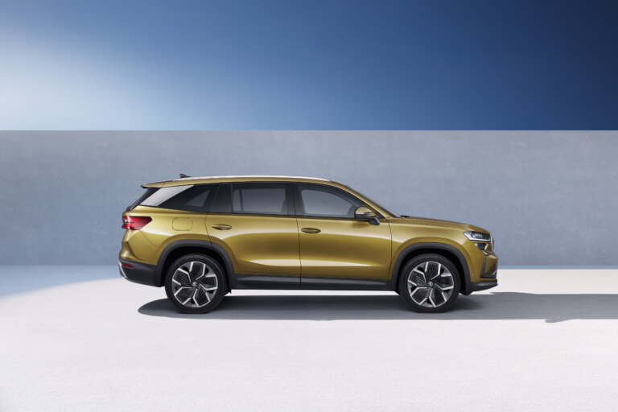
4,76 м в профил. Огледалата се сгъват сами при заключване.
Трите числа, които да измериш в гаража
Ширината на отвора на вратата — самият отвор, не рамката. С отворени огледала колата иска 2,13 м плюс по десетина сантиметра отстрани: 2,35 м е удобно. Огледалата се сгъват електрически при заключване и сгънати минава през 2,05–2,10 м, но с милиметри.
Височината на отвора. Колата е 1,66 м с рейките. 1,80 м е спокойно. Под 1,75 внимавай.
Дълбочината. Колата е 4,76 м. За да минеш отстрани до зарядното трябват 5,30 м и нагоре. При 5,00 влиза, но не се обикаля и задната врата не се отваря докрай.
Поискай тест драйв и я вкарай в гаража си. За кола от 52 000 € дилърът ще даде ключа за час. Ако не влиза, по-добре да го научиш преди подписа. Капачето за зареждане е на предния ляв калник, откъм шофьора — станцията отива на тази стена.
Камерите на 360° показват колата отгоре, сензорите спират при препятствие, а самопаркирането може да я вкара само, докато ти държиш спирачката. С това и 2,20 м отвор става рутина след първата седмица.
Интернет и отдалечено управление
Колата има вградена SIM карта, а Care Connect е стандартен за 3 години. Приложението MyŠkoda на телефона ти дава:
Климатик от разстояние
Пускаш го от дивана, задаваш температура. При плъг-ина е електрически, от батерията — двигателят не пали, нищо не бръмчи в гаража, няма газове.
Включена в зарядното
Взима тока от контакта, не от батерията. Сутрин тръгваш с пълна батерия и топло купе.
Разписание
До 7 дни напред — „всеки делник в 7:45 да е 21 градуса“.
Зареждане
Колко е заредена, кога ще е пълна, пусни/спри, зареждай само в нощната тарифа.
Колата
Къде е паркирана, заключена ли е, колко бензин има. Заключване, светни фаровете.
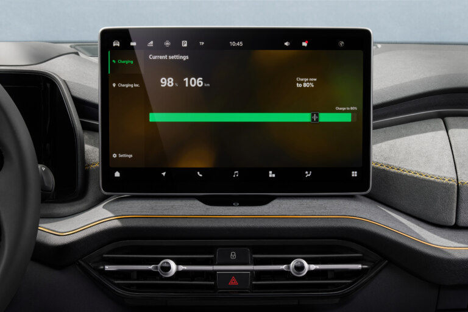
Същият екран виждаш и в приложението на телефона: колко е заредена и до кога.
Да палиш двигателя от разстояние — не. Не се предлага в Европа при никоя марка, заради газовете в затворени пространства. И не ти трябва: климатикът работи без него.
Колата може да е WiFi точка за пътниците, но това е с отделен пакет данни, не е в трите години.
Какво струва на година, освен тока
Числата, които не се казват в шоурума. Ориентири, не оферти.
Данък МПС
Формулата е kW × ставка на общината × 2,3 × Евро 6. Коефициентът 2,3 е за кола до 5 години; Евро 6 сваля с 0,40–0,60. Ставката за 110–150 kW по закон е между 0,63 и 1,89 €/kW и всяка община си я избира.
Очаквай 80–250 € на година, най-вероятно 100–150. Точното число е в наредбата на Община Пловдив, Решение №460 от 18.12.2025.
Плъг-инът няма облекчение — по чл. 58 ЗМДТ освободени са само чистите електромобили. Питай дилъра кои kW пишат в талона — 110 (моторът) или 150 (системата). Първото е по-евтиният данък.
Гражданска отговорност
130–300 € според възраст, стаж и щети. От февруари 2026 има бонус-малус.
Каско
Единственият голям разход, за който никой не те предупреждава. Нова кола за 52 000 € означава четирицифрена премия в евро на година, особено първите три години. Вземи три оферти преди подписа, не след него. Лизингът обикновено го изисква задължително.
Винетка
Около 50 € на година, еднакво за всички.
Обслужване
Всеки 12 месеца или 15 000 км. Масло на DSG на 60 000 км. Спирачна течност на 2 години. Škoda България публикува пакетни сервизни цени — поискай листа за Kodiaq iV от сервиза.
Ток
Около 2 € на 100 км вкъщи на нощна тарифа. На 15 000 км годишно — около 300 €. Бензин за същите километри: 1 800.
Известни проблеми — какво да питаш
Сервизна кампания за седалките
Kodiaq от производство 2024–2025 има отзоваване: ръб на рамката на предната седалка може да повреди страничния airbag при задействане. Поправя се безплатно. Питай: „Има ли отворена сервизна кампания за този VIN?“ — преди да вземеш колата.
12-волтовият акумулатор
При по-старите iV (2020–2023) модулите не заспиваха и изтощаваха малкия акумулатор за 5–10 дни престой. Решено със софтуер. Ако колата ще стои над седмица, я остави включена в зарядното.
Мултимедията
Най-честото оплакване при новото поколение: замръзващ екран, отпадащ CarPlay. Решава се с обновяване на софтуера в сервиза, не е механично.
Зимата
Не е проблем, а очакване: 60–75 км на ток вместо 95. Пак стига за деня, но ще виждаш числото да пада.
Едната формула, от която следва всичко
Няма нужда да учиш електротехника. Едно нещо стига, и от него излизат всички числа, които ще чуеш.
ампери × волтове = ватове
Амперите са колко ток тече. Волтовете са под какъв натиск. Умножени, дават мощността — киловатите, с които зарежда колата.
Разликата между монофазно и трифазно е само в едно: колко жици под ток влизат при теб.
230 VМонофазноЕдна фаза, нула и земя. Това има всеки апартамент. Киловатите са амперите × 0,23.
400 VТрифазноТри фази, нула и земя. Обичайно за къщи и гаражи. Киловатите са амперите × 0,69.
Оттук идват всички станции на пазара. Не са произволни числа:
Монофазно, 16 A
3,7 kW
Монофазно, 25 A
5,75 kW — това EVN води като 6 kW предоставена мощност
Монофазно, 32 A
7,4 kW — затова монофазните станции са точно 7,4
Трифазно, 16 A
11 kW — максимумът, който Kodiaq iV приема
Трифазно, 32 A
22 kW — колата не може да го усвои
Не гони 22 kW. Бордовото зарядно на колата спира на 11 kW. По-мощна станция не зарежда по-бързо, само струва повече.
Как токът стига до колата ти
Всяко ниво има свой таван. Най-ниският от петте решава с каква скорост зарежда колата — затова техникът гледа таблото, а не станцията. Прекъснатата линия е това, което още го няма.
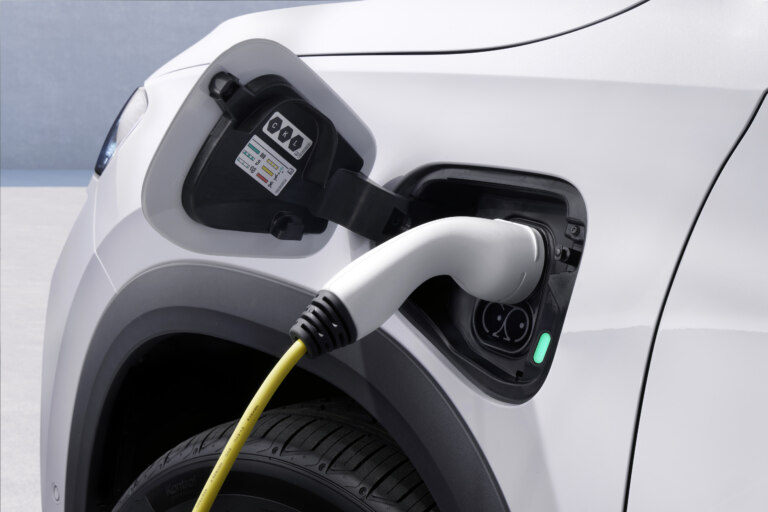
Краят на пътя: капачето на предния ляв калник, конектор Тип 2. Зеленото светодиодче значи, че зарежда.
Речникът, който ти трябва
Ампер (A)
Колко ток тече. Числото, написано на предпазителя.
Волт (V)
Натискът. 230 при монофазно, 400 при трифазно.
Киловат (kW)
Мощност — колко бързо влиза токът. Скоростта.
Киловатчас (kWh)
Количество — колко ток е влязъл. Разстоянието. Батерията на колата е 25,7 kWh.
Фаза, нула, земя
Трите жици. Фазата носи тока, нулата го връща, земята те пази, ако нещо протече.
Предпазител
Автоматичният прекъсвач в таблото. Изключва, ако теглиш повече, отколкото кабелът издържа.
ДТЗ
Дефектнотокова защита. Различно устройство от предпазителя — следи дали ток изтича настрани, например през човек. За зарядна станция е задължителна.
Сечение
Дебелината на кабела в квадратни милиметри. Повече ампери искат по-дебел кабел.
Предоставена мощност
Колко киловата ти позволява договорът с EVN. Отделно от това, което таблото физически може.
Тип 2
Формата на щепсела. Европейският стандарт, който колата има.
AC и DC
Променлив и прав ток. Вкъщи зареждаш на AC, бавно. Бързите станции по пътя дават DC.
Партидата в EVN — виждаш я от дивана
Най-евтината първа стъпка, защото е безплатна и отнема две минути.
Електроразпределение Юг има публична страница PowerCheck.
Без регистрация и без парола. Вписваш ИТН — седемцифрения номер на точката на измерване — плюс код от картинка, и получаваш предоставената мощност в киловати.
ИТН
Седем цифри, във фактурата. Идентифицира обекта, не теб.
Клиентски номер
Горе вдясно на фактурата.
Двутарифен ли е електромерът
Ако сметката няма отделен ред за нощна консумация, не е. Заявява се смяна в офис на EVN, такса 7 лв.
Нощна тарифа
22:00–06:00 през зимата, 23:00–07:00 през лятото. Еднакво за цялата страна.
Битова или стопанска
Ако гаражът е на своя партида — провери коя. Стопанската няма нощна тарифа.
Без двутарифен електромер зареждаш на дневна цена и сметката от 2 евро на 100 км не важи. Седемте лева за смяната се връщат от първите месеци.
Провери сам, за двайсет минути
Само гледаш. Нищо не отваряш и нищо не пипаш. Всичко по-долу се вижда през капака или отвън. Ако табло трябва да се отвори, това го прави техникът, не ти.
Намери електромера и таблото. Обикновено са в шкаф на входа, на стълбището или на стената до самия гараж.
Брой ключовете на главния предпазител. Един ключ, или два залепени един до друг, значат монофазно. Три ключа, свързани с обща летва, които се вдигат заедно, значат трифазно. Това е целият тест.
Прочети числото върху него. Пише нещо като C25 или C32. Числото са амперите, буквата не те интересува.
Сметни киловатите. Монофазно: амперите × 0,23. Трифазно: амперите × 0,69. Един C25 монофазен ти дава 5,75 kW за целия дом.
Погледни контакта в гаража. Има ли трети щифт по средата? Ако няма, линията е стара и без заземяване — значи нова линия е задължителна, не по избор.
Измери с рулетка от таблото до мястото, където ще виси станцията. Метрите определят цената на кабела и са първото, което техникът ще попита.
Какво значи резултатът
И трите изхода вършат работа. Батерията е 25,7 kWh, а ти зареждаш през нощта:
Обикновен контакт 2,3 kW
Около 11 часа. Работи като резерва, не като план — обикновената инсталация не е правена да дава пълен ток всяка нощ.
Монофазна станция 7,4 kW
Около 3,5 часа. Пъхаш кабела в 19 ч, до 23 ч е пълна. Напълно достатъчно.
Трифазна станция 11 kW
Около 2,5 часа. Максимумът, който колата приема.
Ако предоставената мощност е малка, решението не е непременно да я увеличаваш. Станция с динамично управление на мощността следи какво тегли къщата и сама намалява зареждането, за да не изкара главния предпазител. Пита се изрично, защото не всяка станция го има.
Ако просто го включиш в контакта
Работи, и за средно каране може и да стига. Кабелът Mode 2 ограничава тока: на 10 A това са 2,3 kW — около 11 часа от нула. Но от нула рядко се зарежда. Четиридесет километра на ден са към 10 kWh, тоест 4,5 часа. Побира се в една нощ.
Проблемът не е кабелът, а контактът. Зарядната тегли максималния си ток непрекъснато, часове наред, всяка вечер. Стар, окислен или разхлабен шуко контакт не е правен за такъв режим — загрява се на клемите отзад, там където не го виждаш. Оттам тръгват пожарите в гаражи.
Никога през удължител или макара. Навита макара под товар се стопява. Навитият кабел няма как да разсее топлината си.
Пусни кабела на по-нисък ток — 10 до 12 ампера, не на максимум.
След два часа зареждане пипни контакта. Трябва да е леко топъл. Ако е горещ, спираш веднага и викаш техник същата вечер.
Средният вариант, за който да питаш: усилен шуко контакт High-Load 16 A, произведен точно за зареждане на електромобили. По-евтин от станция, но пак иска собствена линия от таблото.
Деветте въпроса към техника
Монофазно или трифазно е захранването до гаража?
Каква е предоставената мощност по партидата и стига ли за зарядна отгоре?
Има ли място в таблото за нов предпазител и ДТЗ?
Какво сечение кабел трябва и колко метра излизат?
Каква дефектнотокова защита слагаш? Правилният отговор е тип B, или тип A, ако станцията има вградена защита срещу прав ток от 6 mA.
Заземяването наред ли е и ще го измериш ли?
Трябва ли заявление до EVN за увеличаване на мощността?
Станцията ще е ли с динамично управление на мощността?
Какъв документ ми оставяш накрая, и колко струва всичко — материал и труд поотделно?
Кога да смениш техника
„Ще я вържа на съществуващия контакт.“ Зарядната тегли максималния си ток по няколко часа, всяка нощ, години наред. Стар контакт и тънък кабел се загряват при такъв режим, и точно така изгарят гаражи. Иска се собствена линия от таблото, с личен предпазител.
Не споменава дефектнотокова защита. Тя е устройството, което изключва тока, ако нещо протече — през мокър под, през повреден кабел, през теб. Без нея инсталацията не отговаря на изискванията за зарядна станция.
Не пита за заземяване. Без изправна земя защитата няма през какво да сработи и стои там за украса.
Дава цена по телефона, без да е видял таблото. Цената зависи от метрите кабел и от това какво има в таблото. Число без оглед значи, че ще се промени после.
Какво струва станцията
Зарядна станция
Škoda iV Charger Connect е около 440 €. Всяка друга с конектор Тип 2 върши същото.
Монтаж
300–900 лв., според метрите кабел.
Кабел за обикновен контакт
155 € от ценовата листа на колата. Резервата за път, не основното решение.
Увеличаване на мощността
Само ако се наложи. Заявление в EVN по Наредба 6, цена по техния ценоразпис.
Общо за станция с монтаж: между 700 и 1 000 евро.
Преди подписа
Оферта с крайна цена, включително продуктовата такса от 76 € и всяка екстра поотделно.
Специалното предложение — число, не обещание. Листата казва да го поискаш, значи го има.
Срок за доставка при поръчка, и има ли нещо близко в наличност.
Кабел Тип 2 към Тип 2 — включен ли е. Без него не зареждаш на обществена станция.
VIN и отворени кампании — седалките.
Гаранциите в договора: 5 години до 150 000 км за колата, 8 години или 160 000 км за батерията.
Кои kW в талона — 110 или 150. Решава данъка.
Три оферти за Каско, преди да подпишеш лизинг.
PowerCheck на EVN и зарядната — по частта за тока. Ако трябва увеличение на мощността, тръгни го сега: това е най-бавната процедура.
Какво да кажеш: „Kodiaq iV Selection с пакетите Light&View Plus, Technology Plus, Convenience, Performance, Assisted Drive Plus, Winter и Acoustic, удължена гаранция до 150 000 км, металик и кабел за домашен контакт. Дайте ми оферта с крайна цена и специалното предложение за този автомобил.“